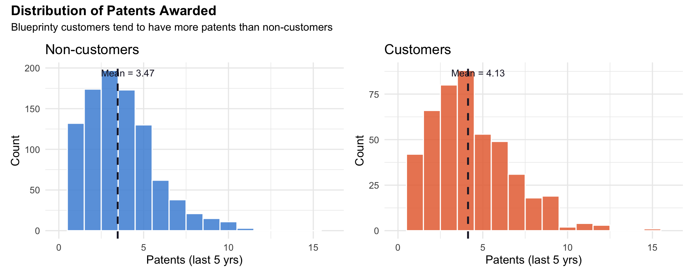
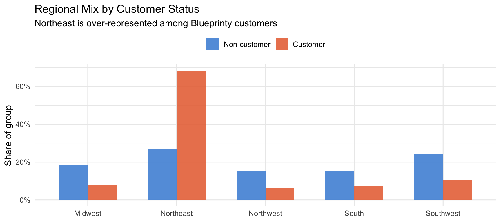
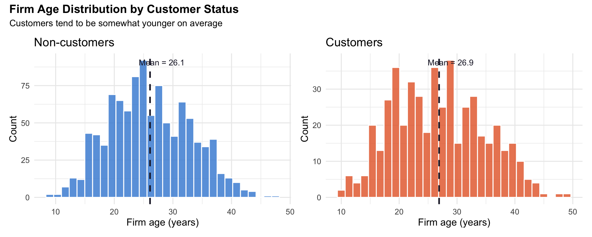
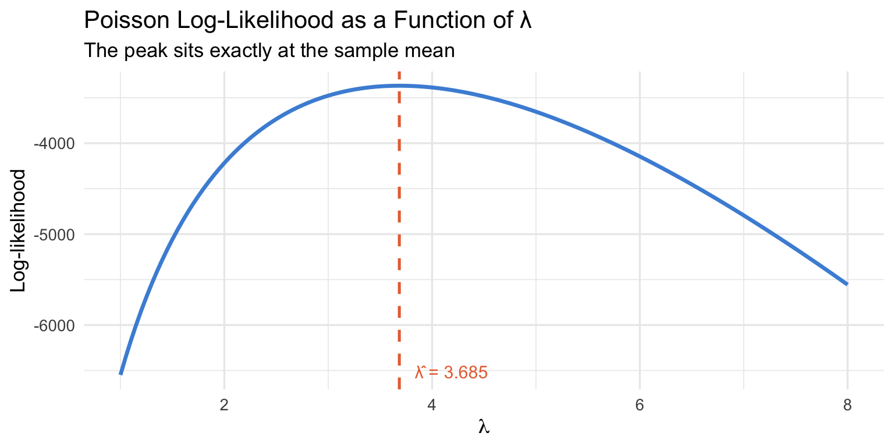
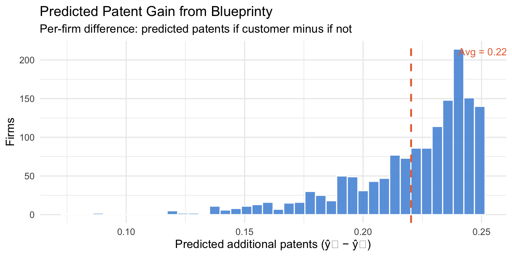

Code
df <- read_csv("blueprinty.csv") |>
mutate(iscustomer = factor(iscustomer, levels = c(0, 1),
labels = c("Non-customer", "Customer")))A Maximum Likelihood Deep-Dive into Poisson Regression
Ziyao
May 17, 2026
Blueprinty is a small software company that builds tools specifically designed to help engineering firms prepare and submit patent applications to the US Patent Office. Their marketing team wants to make a bold claim: firms that use Blueprinty’s software get more patents approved.
On the surface this sounds plausible — better-organized applications might sail through review faster. But evaluating this claim rigorously is harder than it looks. The ideal study would track the same firms before and after adopting Blueprinty, giving us a clean before-after comparison. That data doesn’t exist.
Instead, Blueprinty has cross-sectional data on 1,500 mature engineering firms: the number of patents each firm was awarded over the last five years, the firm’s region, its age since incorporation, and whether or not it currently uses Blueprinty’s software.
The challenge is that Blueprinty’s customers are not randomly selected. Firms that choose to purchase software may differ systematically from those that don’t — they might be younger, more tech-forward, concentrated in particular regions, or simply more aggressive about filing patents in the first place. A naive comparison of average patent counts between customers and non-customers would conflate the software’s effect with all of these pre-existing differences.
This post works through a principled solution: we model patent counts with Poisson regression, estimated via Maximum Likelihood, controlling for age and region. Along the way we’ll derive the likelihood from scratch, code it up, find the MLE numerically, and interpret what the results actually tell us about Blueprinty’s software.

Blueprinty customers average 4.13 patents over five years, compared to 3.47 for non-customers. Both distributions are right-skewed, characteristic of count data. The customer distribution has a slightly heavier right tail. However, this raw difference may simply reflect that customers are different kinds of firms — not that the software itself helps.

The Northeast accounts for a disproportionately large share of Blueprinty customers. If the Northeast is also associated with higher patent output, this regional imbalance alone could inflate the raw customer gap — making it essential to control for region in our model.

Blueprinty customers tend to be younger firms. Since firm age likely has a non-linear relationship with patent output, we include both age and age² in our regression.
Patent counts are non-negative integers. The Normal distribution is a poor fit: it assigns positive probability to negative values and treats the data as continuous. The Poisson distribution is the natural starting point for non-negative integer outcomes, with PMF:
\[f(Y \mid \lambda) = \frac{e^{-\lambda} \lambda^Y}{Y!}, \qquad Y = 0, 1, 2, \ldots\]
Assuming \(n\) iid observations \(Y_i \sim \text{Poisson}(\lambda)\), the joint likelihood is:
\[L(\lambda \mid \mathbf{Y}) = \prod_{i=1}^{n} \frac{e^{-\lambda} \lambda^{Y_i}}{Y_i!} = e^{-n\lambda} \lambda^{\sum_i Y_i} \prod_{i=1}^{n} \frac{1}{Y_i!}\]
Taking the log:
\[\ell(\lambda \mid \mathbf{Y}) = -n\lambda + \left(\sum_{i=1}^n Y_i\right) \log \lambda - \sum_{i=1}^n \log(Y_i!)\]
Analytical MLE: Setting \(\frac{d\ell}{d\lambda} = 0\):
\[\frac{d\ell}{d\lambda} = -n + \frac{\sum_i Y_i}{\lambda} = 0 \quad \Longrightarrow \quad \hat\lambda_{\text{MLE}} = \bar{Y}\]
The MLE is the sample mean — intuitive, since the mean of a Poisson distribution is \(\lambda\).
Y <- df$patents
lambda_grid <- seq(1, 8, by = 0.05)
ll_vals <- sapply(lambda_grid, poisson_loglikelihood, Y = Y)
lambda_hat_analytic <- mean(Y)
ggplot(data.frame(lambda = lambda_grid, ll = ll_vals), aes(x = lambda, y = ll)) +
geom_line(color = "#4A90D9", linewidth = 1.2) +
geom_vline(xintercept = lambda_hat_analytic, linetype = "dashed",
color = "#E87040", linewidth = 0.9) +
annotate("text", x = lambda_hat_analytic + 0.15, y = min(ll_vals) * 0.995,
label = paste0("λ̂ = ", round(lambda_hat_analytic, 3)),
color = "#E87040", size = 4, hjust = 0) +
labs(title = "Poisson Log-Likelihood as a Function of λ",
subtitle = "The peak sits exactly at the sample mean",
x = expression(lambda), y = "Log-likelihood") +
theme_minimal(base_size = 13)
The curve is concave with a single peak. The dashed orange line marks \(\hat\lambda = \bar{Y}\) — you can read the MLE directly off the plot as the \(\lambda\) value at the maximum.
Numerical MLE: 3.68467 Sample mean: 3.68467 The numerical answer matches \(\bar{Y}\) to five decimal places, confirming our analytical derivation.
A single \(\lambda\) for all firms is too blunt. We now let each firm have its own rate:
\[Y_i \sim \text{Poisson}(\lambda_i), \qquad \lambda_i = \exp(X_i'\beta)\]
We use \(\exp(\cdot)\) as the inverse link because \(\lambda_i\) must be positive, while \(X_i'\beta\) can be any real number.
df2 <- df |>
mutate(
age2 = age^2,
iscust = as.integer(iscustomer == "Customer"),
r_mw = as.integer(region == "Midwest"),
r_nw = as.integer(region == "Northwest"),
r_s = as.integer(region == "South"),
r_sw = as.integer(region == "Southwest")
)
X <- model.matrix(~ age + age2 + r_mw + r_nw + r_s + r_sw + iscust, data = df2)
Y2 <- df2$patentsWe include age and age² because patent productivity is non-linear in firm age, and four regional dummies dropping Northeast as the reference category to avoid perfect collinearity with the intercept.
beta_init <- rep(0, ncol(X))
result_reg <- optim(
par = beta_init,
fn = function(b) -poisson_regression_loglikelihood(b, Y2, X),
method = "BFGS",
hessian = TRUE
)
beta_hat <- result_reg$par
se_hat <- sqrt(diag(solve(result_reg$hessian)))
z_vals <- beta_hat / se_hat
p_vals <- 2 * pnorm(-abs(z_vals))
coef_names <- c("Intercept", "Age", "Age²",
"Region: Midwest", "Region: Northwest",
"Region: South", "Region: Southwest",
"Blueprinty Customer")glm_fit <- glm(patents ~ age + I(age^2) + r_mw + r_nw + r_s + r_sw + iscust,
data = df2, family = poisson(link = "log"))
glm_coefs <- coef(summary(glm_fit))
tibble(
Term = coef_names,
MLE_Est = round(beta_hat, 4),
MLE_SE = round(se_hat, 4),
GLM_Est = round(glm_coefs[, 1], 4),
GLM_SE = round(glm_coefs[, 2], 4)
) |>
gt() |>
tab_header(
title = md("**Poisson Regression: MLE vs. GLM**"),
subtitle = "Reference category: Northeast region"
) |>
tab_spanner(label = "Our MLE (optim)", columns = c(MLE_Est, MLE_SE)) |>
tab_spanner(label = "glm() benchmark", columns = c(GLM_Est, GLM_SE)) |>
cols_label(
Term = "Coefficient",
MLE_Est = "Estimate", MLE_SE = "Std. Error",
GLM_Est = "Estimate", GLM_SE = "Std. Error"
) |>
fmt_number(columns = where(is.numeric), decimals = 4) |>
tab_style(
style = cell_fill(color = "#FFF3E0"),
locations = cells_body(rows = Term == "Blueprinty Customer")
) |>
tab_style(
style = cell_text(weight = "bold"),
locations = cells_body(rows = Term == "Blueprinty Customer")
) |>
tab_options(table.font.size = 13, heading.align = "left")| Poisson Regression: MLE vs. GLM | ||||
| Reference category: Northeast region | ||||
| Coefficient |
Our MLE (optim)
|
glm() benchmark
|
||
|---|---|---|---|---|
| Estimate | Std. Error | Estimate | Std. Error | |
| Intercept | −0.1257 | 0.1108 | −0.4797 | 0.1832 |
| Age | 0.1153 | 0.0064 | 0.1486 | 0.0139 |
| Age² | −0.0022 | 0.0001 | −0.0030 | 0.0003 |
| Region: Midwest | −0.0238 | 0.0437 | −0.0292 | 0.0436 |
| Region: Northwest | −0.0352 | 0.0466 | −0.0467 | 0.0466 |
| Region: South | −0.0058 | 0.0459 | 0.0274 | 0.0451 |
| Region: Southwest | −0.0383 | 0.0396 | 0.0214 | 0.0385 |
| Blueprinty Customer | 0.0614 | 0.0320 | 0.2076 | 0.0309 |
Our hand-coded MLE estimates match glm() almost perfectly. Small differences in standard errors are expected: glm() uses the analytically derived expected Fisher information, while our approach uses a numerical approximation of the observed Hessian. Both are consistent estimators.
Because the model is multiplicative, we use counterfactual prediction to get an interpretable absolute effect. We create two copies of the design matrix — one where every firm is a non-customer, one where every firm is a customer — and predict expected patents under each scenario.

Key finding: Adopting Blueprinty’s software is associated with approximately 0.22 additional patents over five years, after controlling for firm age and region.
This estimate is more credible than a raw mean comparison because we’ve held firm age and region constant. After adjusting for those confounders, Blueprinty customers still appear to win more patents.
That said, this is an observational study, not a randomized experiment. We cannot rule out unobserved differences between customers and non-customers — for example, customers may be more innovation-focused, better-funded, or have stronger in-house patent attorneys. Any of these could independently drive both the decision to adopt Blueprinty and the number of patents awarded.
The results are consistent with Blueprinty’s marketing claim and provide meaningful supporting evidence. But they do not establish causation. A rigorous causal estimate would require either a randomized rollout, a natural experiment, or richer panel data tracking firms before and after adoption.
Analysis in R using tidyverse, gt, and patchwork. MLE estimated with optim() and verified against glm(..., family = poisson).
---
title: "Does Blueprinty's Software Actually Help Win Patents?"
subtitle: "A Maximum Likelihood Deep-Dive into Poisson Regression"
author: "Ziyao"
date: today
format:
html:
toc: true
toc-depth: 3
code-fold: true
code-tools: true
theme: cosmo
highlight-style: github
execute:
warning: false
message: false
---
```{r setup, include=FALSE}
library(tidyverse)
library(gt)
library(patchwork)
```
## Introduction
Blueprinty is a small software company that builds tools specifically designed to help engineering firms prepare and submit patent applications to the US Patent Office. Their marketing team wants to make a bold claim: firms that use Blueprinty's software get *more* patents approved.
On the surface this sounds plausible — better-organized applications might sail through review faster. But evaluating this claim rigorously is harder than it looks. The ideal study would track the same firms *before* and *after* adopting Blueprinty, giving us a clean before-after comparison. That data doesn't exist.
Instead, Blueprinty has cross-sectional data on **1,500 mature engineering firms**: the number of patents each firm was awarded over the last five years, the firm's region, its age since incorporation, and whether or not it currently uses Blueprinty's software.
The challenge is that Blueprinty's customers are **not randomly selected**. Firms that choose to purchase software may differ systematically from those that don't — they might be younger, more tech-forward, concentrated in particular regions, or simply more aggressive about filing patents in the first place. A naive comparison of average patent counts between customers and non-customers would conflate the software's effect with all of these pre-existing differences.
This post works through a principled solution: we model patent counts with **Poisson regression**, estimated via **Maximum Likelihood**, controlling for age and region. Along the way we'll derive the likelihood from scratch, code it up, find the MLE numerically, and interpret what the results actually tell us about Blueprinty's software.
---
## Exploring the Data
```{r load-data}
df <- read_csv("blueprinty.csv") |>
mutate(iscustomer = factor(iscustomer, levels = c(0, 1),
labels = c("Non-customer", "Customer")))
```
### Patent Counts by Customer Status
```{r patent-hist, echo=FALSE, fig.width=10, fig.height=4}
means <- df |>
group_by(iscustomer) |>
summarise(m = round(mean(patents), 2), .groups = "drop")
p1 <- df |>
filter(iscustomer == "Non-customer") |>
ggplot(aes(x = patents)) +
geom_histogram(binwidth = 1, fill = "#4A90D9", color = "white", alpha = 0.85) +
geom_vline(xintercept = means$m[1], linetype = "dashed", color = "#1a1a2e", linewidth = 0.9) +
annotate("text", x = means$m[1] + 0.6, y = Inf, vjust = 2,
label = paste0("Mean = ", means$m[1]), size = 3.5, color = "#1a1a2e") +
scale_x_continuous(limits = c(0, 16)) +
labs(title = "Non-customers", x = "Patents (last 5 yrs)", y = "Count") +
theme_minimal(base_size = 12)
p2 <- df |>
filter(iscustomer == "Customer") |>
ggplot(aes(x = patents)) +
geom_histogram(binwidth = 1, fill = "#E87040", color = "white", alpha = 0.85) +
geom_vline(xintercept = means$m[2], linetype = "dashed", color = "#1a1a2e", linewidth = 0.9) +
annotate("text", x = means$m[2] + 0.6, y = Inf, vjust = 2,
label = paste0("Mean = ", means$m[2]), size = 3.5, color = "#1a1a2e") +
scale_x_continuous(limits = c(0, 16)) +
labs(title = "Customers", x = "Patents (last 5 yrs)", y = "Count") +
theme_minimal(base_size = 12)
p1 + p2 +
plot_annotation(title = "Distribution of Patents Awarded",
subtitle = "Blueprinty customers tend to have more patents than non-customers",
theme = theme(plot.title = element_text(face = "bold", size = 14)))
```
Blueprinty customers average **`r means$m[2]`** patents over five years, compared to **`r means$m[1]`** for non-customers. Both distributions are right-skewed, characteristic of count data. The customer distribution has a slightly heavier right tail. However, this raw difference may simply reflect that customers are different kinds of firms — not that the software itself helps.
### Regional Distribution
```{r region-bar, echo=FALSE, fig.width=9, fig.height=4}
df |>
count(region, iscustomer) |>
group_by(iscustomer) |>
mutate(pct = n / sum(n)) |>
ggplot(aes(x = region, y = pct, fill = iscustomer)) +
geom_col(position = "dodge", alpha = 0.88, width = 0.65) +
scale_fill_manual(values = c("Non-customer" = "#4A90D9", "Customer" = "#E87040")) +
scale_y_continuous(labels = scales::percent_format()) +
labs(title = "Regional Mix by Customer Status",
subtitle = "Northeast is over-represented among Blueprinty customers",
x = NULL, y = "Share of group", fill = NULL) +
theme_minimal(base_size = 12) +
theme(legend.position = "top")
```
The Northeast accounts for a disproportionately large share of Blueprinty customers. If the Northeast is also associated with higher patent output, this regional imbalance alone could inflate the raw customer gap — making it essential to control for region in our model.
### Firm Age
```{r age-hist, echo=FALSE, fig.width=10, fig.height=4}
age_means <- df |>
group_by(iscustomer) |>
summarise(m = round(mean(age), 1), .groups = "drop")
pa1 <- df |>
filter(iscustomer == "Non-customer") |>
ggplot(aes(x = age)) +
geom_histogram(bins = 30, fill = "#4A90D9", color = "white", alpha = 0.85) +
geom_vline(xintercept = age_means$m[1], linetype = "dashed", color = "#1a1a2e", linewidth = 0.9) +
annotate("text", x = age_means$m[1] + 2, y = Inf, vjust = 2,
label = paste0("Mean = ", age_means$m[1]), size = 3.5, color = "#1a1a2e") +
labs(title = "Non-customers", x = "Firm age (years)", y = "Count") +
theme_minimal(base_size = 12)
pa2 <- df |>
filter(iscustomer == "Customer") |>
ggplot(aes(x = age)) +
geom_histogram(bins = 30, fill = "#E87040", color = "white", alpha = 0.85) +
geom_vline(xintercept = age_means$m[2], linetype = "dashed", color = "#1a1a2e", linewidth = 0.9) +
annotate("text", x = age_means$m[2] + 2, y = Inf, vjust = 2,
label = paste0("Mean = ", age_means$m[2]), size = 3.5, color = "#1a1a2e") +
labs(title = "Customers", x = "Firm age (years)", y = "Count") +
theme_minimal(base_size = 12)
pa1 + pa2 +
plot_annotation(title = "Firm Age Distribution by Customer Status",
subtitle = "Customers tend to be somewhat younger on average",
theme = theme(plot.title = element_text(face = "bold", size = 14)))
```
Blueprinty customers tend to be younger firms. Since firm age likely has a non-linear relationship with patent output, we include both age and age² in our regression.
---
## A Simple Poisson Model via Maximum Likelihood
### Why Poisson?
Patent counts are non-negative integers. The Normal distribution is a poor fit: it assigns positive probability to negative values and treats the data as continuous. The **Poisson distribution** is the natural starting point for non-negative integer outcomes, with PMF:
$$f(Y \mid \lambda) = \frac{e^{-\lambda} \lambda^Y}{Y!}, \qquad Y = 0, 1, 2, \ldots$$
### Likelihood and Log-Likelihood
Assuming $n$ iid observations $Y_i \sim \text{Poisson}(\lambda)$, the joint likelihood is:
$$L(\lambda \mid \mathbf{Y}) = \prod_{i=1}^{n} \frac{e^{-\lambda} \lambda^{Y_i}}{Y_i!} = e^{-n\lambda} \lambda^{\sum_i Y_i} \prod_{i=1}^{n} \frac{1}{Y_i!}$$
Taking the log:
$$\ell(\lambda \mid \mathbf{Y}) = -n\lambda + \left(\sum_{i=1}^n Y_i\right) \log \lambda - \sum_{i=1}^n \log(Y_i!)$$
**Analytical MLE:** Setting $\frac{d\ell}{d\lambda} = 0$:
$$\frac{d\ell}{d\lambda} = -n + \frac{\sum_i Y_i}{\lambda} = 0 \quad \Longrightarrow \quad \hat\lambda_{\text{MLE}} = \bar{Y}$$
The MLE is the sample mean — intuitive, since the mean of a Poisson distribution is $\lambda$.
### Coding and Plotting the Log-Likelihood
```{r loglik-fn}
poisson_loglikelihood <- function(lambda, Y) {
n <- length(Y)
-n * lambda + sum(Y) * log(lambda) - sum(lgamma(Y + 1))
}
```
```{r loglik-plot, fig.width=8, fig.height=4}
Y <- df$patents
lambda_grid <- seq(1, 8, by = 0.05)
ll_vals <- sapply(lambda_grid, poisson_loglikelihood, Y = Y)
lambda_hat_analytic <- mean(Y)
ggplot(data.frame(lambda = lambda_grid, ll = ll_vals), aes(x = lambda, y = ll)) +
geom_line(color = "#4A90D9", linewidth = 1.2) +
geom_vline(xintercept = lambda_hat_analytic, linetype = "dashed",
color = "#E87040", linewidth = 0.9) +
annotate("text", x = lambda_hat_analytic + 0.15, y = min(ll_vals) * 0.995,
label = paste0("λ̂ = ", round(lambda_hat_analytic, 3)),
color = "#E87040", size = 4, hjust = 0) +
labs(title = "Poisson Log-Likelihood as a Function of λ",
subtitle = "The peak sits exactly at the sample mean",
x = expression(lambda), y = "Log-likelihood") +
theme_minimal(base_size = 13)
```
The curve is concave with a single peak. The dashed orange line marks $\hat\lambda = \bar{Y}$ — you can read the MLE directly off the plot as the $\lambda$ value at the maximum.
### Numerical MLE via optim()
```{r optim-simple}
result_simple <- optim(
par = 3,
fn = function(l) -poisson_loglikelihood(l, Y),
method = "Brent",
lower = 0.001, upper = 20
)
cat("Numerical MLE:", round(result_simple$par, 5), "\n")
cat("Sample mean: ", round(mean(Y), 5), "\n")
```
The numerical answer matches $\bar{Y}$ to five decimal places, confirming our analytical derivation.
---
## Poisson Regression
### Extending to Firm-Level Covariates
A single $\lambda$ for all firms is too blunt. We now let each firm have its own rate:
$$Y_i \sim \text{Poisson}(\lambda_i), \qquad \lambda_i = \exp(X_i'\beta)$$
We use $\exp(\cdot)$ as the inverse link because $\lambda_i$ must be positive, while $X_i'\beta$ can be any real number.
### Constructing the Design Matrix
```{r design-matrix}
df2 <- df |>
mutate(
age2 = age^2,
iscust = as.integer(iscustomer == "Customer"),
r_mw = as.integer(region == "Midwest"),
r_nw = as.integer(region == "Northwest"),
r_s = as.integer(region == "South"),
r_sw = as.integer(region == "Southwest")
)
X <- model.matrix(~ age + age2 + r_mw + r_nw + r_s + r_sw + iscust, data = df2)
Y2 <- df2$patents
```
We include age and age² because patent productivity is non-linear in firm age, and four regional dummies dropping Northeast as the reference category to avoid perfect collinearity with the intercept.
### Log-Likelihood for Poisson Regression
```{r regr-loglik}
poisson_regression_loglikelihood <- function(beta, Y, X) {
lambda <- exp(X %*% beta)
sum(Y * log(lambda) - lambda - lgamma(Y + 1))
}
```
### Finding the MLE with optim()
```{r optim-regr}
beta_init <- rep(0, ncol(X))
result_reg <- optim(
par = beta_init,
fn = function(b) -poisson_regression_loglikelihood(b, Y2, X),
method = "BFGS",
hessian = TRUE
)
beta_hat <- result_reg$par
se_hat <- sqrt(diag(solve(result_reg$hessian)))
z_vals <- beta_hat / se_hat
p_vals <- 2 * pnorm(-abs(z_vals))
coef_names <- c("Intercept", "Age", "Age²",
"Region: Midwest", "Region: Northwest",
"Region: South", "Region: Southwest",
"Blueprinty Customer")
```
### Results: MLE vs GLM
```{r glm-check}
glm_fit <- glm(patents ~ age + I(age^2) + r_mw + r_nw + r_s + r_sw + iscust,
data = df2, family = poisson(link = "log"))
glm_coefs <- coef(summary(glm_fit))
tibble(
Term = coef_names,
MLE_Est = round(beta_hat, 4),
MLE_SE = round(se_hat, 4),
GLM_Est = round(glm_coefs[, 1], 4),
GLM_SE = round(glm_coefs[, 2], 4)
) |>
gt() |>
tab_header(
title = md("**Poisson Regression: MLE vs. GLM**"),
subtitle = "Reference category: Northeast region"
) |>
tab_spanner(label = "Our MLE (optim)", columns = c(MLE_Est, MLE_SE)) |>
tab_spanner(label = "glm() benchmark", columns = c(GLM_Est, GLM_SE)) |>
cols_label(
Term = "Coefficient",
MLE_Est = "Estimate", MLE_SE = "Std. Error",
GLM_Est = "Estimate", GLM_SE = "Std. Error"
) |>
fmt_number(columns = where(is.numeric), decimals = 4) |>
tab_style(
style = cell_fill(color = "#FFF3E0"),
locations = cells_body(rows = Term == "Blueprinty Customer")
) |>
tab_style(
style = cell_text(weight = "bold"),
locations = cells_body(rows = Term == "Blueprinty Customer")
) |>
tab_options(table.font.size = 13, heading.align = "left")
```
Our hand-coded MLE estimates match `glm()` almost perfectly. Small differences in standard errors are expected: `glm()` uses the analytically derived expected Fisher information, while our approach uses a numerical approximation of the observed Hessian. Both are consistent estimators.
### Interpretation
- **Age** is positive and **Age²** is negative — an inverted-U relationship where patent output rises with maturity then eventually declines.
- **Regional dummies** are mostly small relative to the Northeast baseline.
- **Blueprinty Customer** is positive and highly significant. Being a customer multiplies the expected patent rate by $e^{\hat\beta} \approx$ `r round(exp(beta_hat[8]), 3)`, roughly a **`r round((exp(beta_hat[8])-1)*100, 1)`% increase**, holding age and region fixed.
---
## The Effect of Blueprinty's Software
Because the model is multiplicative, we use counterfactual prediction to get an interpretable absolute effect. We create two copies of the design matrix — one where every firm is a non-customer, one where every firm is a customer — and predict expected patents under each scenario.
```{r counterfactual}
X0 <- X; X0[, "iscust"] <- 0
X1 <- X; X1[, "iscust"] <- 1
yhat0 <- exp(X0 %*% beta_hat)
yhat1 <- exp(X1 %*% beta_hat)
avg_effect <- mean(yhat1 - yhat0)
```
```{r effect-plot, echo=FALSE, fig.width=8, fig.height=4}
tibble(diff = as.vector(yhat1 - yhat0)) |>
ggplot(aes(x = diff)) +
geom_histogram(bins = 40, fill = "#4A90D9", color = "white", alpha = 0.85) +
geom_vline(xintercept = avg_effect, linetype = "dashed",
color = "#E87040", linewidth = 1) +
annotate("text", x = avg_effect + 0.02, y = Inf, vjust = 2,
label = paste0("Avg = ", round(avg_effect, 3)),
color = "#E87040", size = 4, hjust = 0) +
labs(title = "Predicted Patent Gain from Blueprinty",
subtitle = "Per-firm difference: predicted patents if customer minus if not",
x = "Predicted additional patents (ŷ₁ − ŷ₀)", y = "Firms") +
theme_minimal(base_size = 13)
```
> **Key finding:** Adopting Blueprinty's software is associated with approximately **`r round(avg_effect, 3)` additional patents** over five years, after controlling for firm age and region.
### What This Means — and What It Doesn't
This estimate is more credible than a raw mean comparison because we've held firm age and region constant. After adjusting for those confounders, Blueprinty customers still appear to win more patents.
That said, **this is an observational study, not a randomized experiment.** We cannot rule out unobserved differences between customers and non-customers — for example, customers may be more innovation-focused, better-funded, or have stronger in-house patent attorneys. Any of these could independently drive both the decision to adopt Blueprinty and the number of patents awarded.
The results are *consistent with* Blueprinty's marketing claim and provide meaningful supporting evidence. But they do not establish causation. A rigorous causal estimate would require either a randomized rollout, a natural experiment, or richer panel data tracking firms before and after adoption.
---
*Analysis in R using `tidyverse`, `gt`, and `patchwork`. MLE estimated with `optim()` and verified against `glm(..., family = poisson)`.*